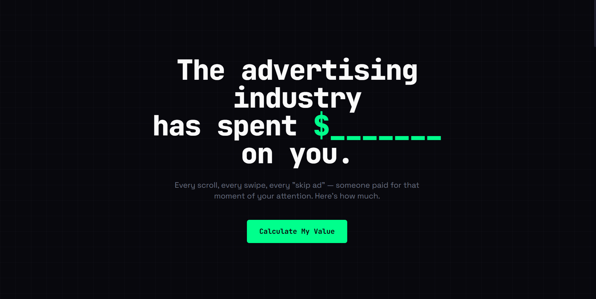
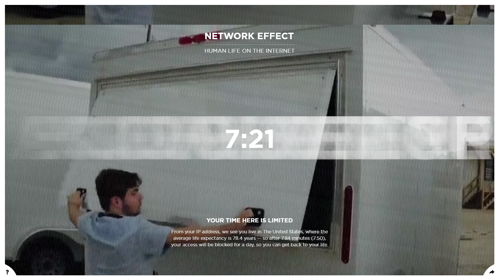

Attention Worth is an interactive project that visualizes the economic value of user attention in digital advertising systems. The interface design is minimal and focused, using clean typography and simple layouts to emphasize statistics and user-generated calculations rather than decorative visuals.
The interaction design is effective because users actively input information and immediately see personalized results, creating a stronger emotional connection to the data. The project transforms abstract concepts about online advertising into concrete numbers that users can understand and reflect on.
Overall, the user experience is straightforward and accessible, though it leans more informational than immersive. The simplicity helps communicate the concept clearly, but there is less narrative storytelling and emotional atmosphere compared to more experimental interactive projects.

Network Effect is an experimental interactive project that explores the emotional and psychological effects of constant internet connectivity and digital overload. The interface design intentionally feels chaotic and dense, using layered visuals, motion, and overlapping content to simulate the overwhelming nature of online environments.
The interaction design strongly supports the project’s concept by making users experience distraction and information overload firsthand rather than simply reading about it. Scrolling, transitions, and animated content create a sense of unease that reinforces the project’s dystopian themes surrounding technology and attention.
Overall, the user experience is immersive and emotionally impactful, even if it can sometimes feel intentionally uncomfortable. The project succeeds in turning abstract ideas about internet culture and digital attention into a memorable sensory experience that encourages reflection on the future of online life.